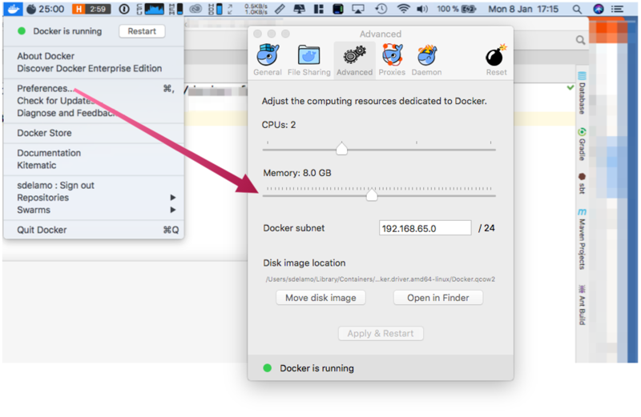
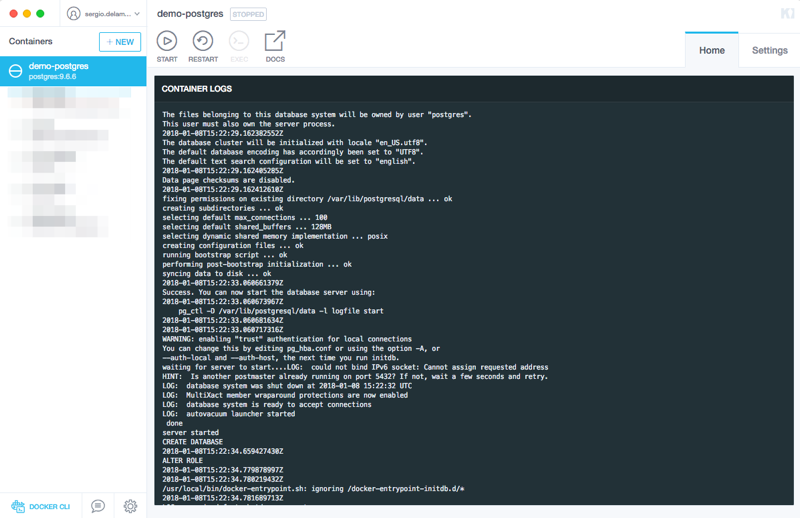

Grails as a Docker Container
Learn how to distribute your Grails application as a Docker container.
Authors: Iván López
Grails Version: 3
1 Training
Apache Grails Training
Apache Grails is now part of the Apache Software Foundation. The community-maintained training catalog is being migrated; in the meantime see the Learning page for current resources, recorded talks, and links to other community-supplied training material.
2 Getting Started
Docker has become a nice way to run an application without the hassle of installing any of the dependencies to run it.
In this Guide you will write a Grails application that will be packed as a Docker image and will run inside a Docker container.
2.1 How to complete the guide
To get started do the following:
-
Download and unzip the source
or
-
Clone the Git repository:
git clone https://github.com/grails-guides/grails-docker-bootbuildimage.git
The Grails guides repositories contain two folders:
-
initialInitial project. Often a simple Grails app with some additional code to give you a head-start. -
completeA completed example. It is the result of working through the steps presented by the guide and applying those changes to theinitialfolder.
To complete the guide, go to the initial folder
-
cdintograils-guides/grails-docker-bootbuildimage/initial
and follow the instructions in the next sections.
You can go right to the completed example if you cd into grails-guides/grails-docker-bootbuildimage/complete
|
3 Writing the Guide
3.1 Install and configure Docker
If you do not already have Docker installed, you’ll need to install it.
Depending on your environment you may need to increase Docker’s available memory to 4GB or more.

Tip: Get Kitematic
Kitematic is an excellent desktop application for managing Docker containers. The first time you click Open Kitematic, it will prompt you to download and install it. You can then use Kitematic to view the output of your containers, manage their settings, etc.

3.2 Gradle Docker plugin
In this guide, we use the Gradle Docker Plugin; a Gradle plugin for managing Docker images and containers.
To install the Gradle plugin, modify build.gradle:
buildscript {
repositories {
mavenLocal()
maven { url "https://repo.grails.org/grails/core" }
}
dependencies {
classpath "org.grails:grails-gradle-plugin:$grailsVersion"
classpath "gradle.plugin.com.energizedwork.webdriver-binaries:webdriver-binaries-gradle-plugin:1.1"
classpath "gradle.plugin.com.energizedwork:idea-gradle-plugins:1.4"
classpath "org.grails.plugins:hibernate5:${gormVersion-".RELEASE"}"
classpath "com.bertramlabs.plugins:asset-pipeline-gradle:2.14.6"
classpath "com.bmuschko:gradle-docker-plugin:3.2.1" (1)
}
}
apply plugin:"eclipse"
apply plugin:"idea"
//apply plugin:"war" (2)
apply plugin:"org.grails.grails-web"
apply plugin:"com.energizedwork.webdriver-binaries"
apply plugin:"com.energizedwork.idea-project-components"
apply plugin:"asset-pipeline"
apply plugin:"org.grails.grails-gsp"
apply plugin:"com.bmuschko.docker-remote-api" (1)| 1 | Gradle Docker Plugin |
| 2 | Remove war plugin because we’ll generate a runnable jar |
3.3 App Entry Script
Create a script which will serve as the entrypoint of the container.
#!/bin/sh
java -Djava.security.egd=file:/dev/./urandom -jar /app/application.jar3.4 Gradle Docker Tasks
Configure several Gradle tasks which allow us to build the runnable jar, copy it along with the necessary resources
to a temporal directory, generate a Dockerfile file and finally build the docker image.
import com.bmuschko.gradle.docker.tasks.image.Dockerfile
import com.bmuschko.gradle.docker.tasks.image.DockerBuildImage
...
..
.
ext {
dockerTag = "grails-sample/${project.name}:${project.version}".toLowerCase() (1)
dockerBuildDir = mkdir("${buildDir}/docker") (2)
}
task prepareDocker(type: Copy, dependsOn: assemble) { (3)
description = 'Copy files from src/main/docker and application jar to Docker temporal build directory'
group = 'Docker'
from 'src/main/docker'
from project.jar
into dockerBuildDir
}
task createDockerfile(type: Dockerfile, dependsOn: prepareDocker) { (4)
description = 'Create a Dockerfile file'
group = 'Docker'
destFile = project.file("${dockerBuildDir}/Dockerfile")
from 'openjdk:8u151-jdk-alpine'
maintainer 'John Doe "john.doe@example.com"'
exposePort 8080
workingDir '/app'
copyFile jar.archiveName, 'application.jar'
copyFile 'app-entrypoint.sh', 'app-entrypoint.sh' (5)
runCommand 'chmod +x app-entrypoint.sh'
entryPoint '/app/app-entrypoint.sh' (5)
}
task buildImage(type: DockerBuildImage, dependsOn: createDockerfile) { (6)
description = 'Create Docker image to run the Grails application'
group = 'Docker'
inputDir = file(dockerBuildDir)
tag = dockerTag
}| 1 | Define the docker image name. It will be something like grails-sample/myProject:0.1 |
| 2 | Temporal directory used to build the Docker image |
| 3 | Copy the runnable jar file and the additional files from src/main/docker to the temporary directory |
| 4 | Create the Dockerfile file |
| 5 | Copy the app-entrypoint.sh script and define it as entrypoint of the container |
| 6 | Build the Docker image |
The content of app-entrypoint.sh is:
#!/bin/sh
java -Djava.security.egd=file:/dev/./urandom -jar /app/application.jar4 Building the app
After creating the new Gradle tasks, now we can execute:
./gradlew buildImage
...
...
:complete:jar
:complete:bootRepackage
:complete:assemble (1)
:complete:prepareDocker
:complete:createDockerfile
:complete:buildImage (2)
Building image using context '/home/ivan/workspaces/oci/guides/grails-as-docker-container/complete/build/docker'.
Using tag 'grails-sample/complete:0.1' for image.
Step 1/8 : FROM openjdk:8u151-jdk-alpine
---> 3642e636096d
Step 2/8 : MAINTAINER John Doe "john.doe@example.com"
---> Using cache
---> 3e1c67b067e8
Step 3/8 : EXPOSE 8080
---> Using cache
---> 144aadd0580e
Step 4/8 : WORKDIR /app
---> Using cache
---> c9af01e696f8
Step 5/8 : COPY complete-0.1.jar application.jar
---> e4f41e8f0840
Removing intermediate container 6dccf4039811
Step 6/8 : COPY app-entrypoint.sh app-entrypoint.sh
---> 0be562313720
Removing intermediate container 595d0cb7b9d2
Step 7/8 : RUN chmod +x app-entrypoint.sh
---> Running in 3b41eb944045
---> 5f6fa6b0ab9a
Removing intermediate container 3b41eb944045
Step 8/8 : ENTRYPOINT /app/app-entrypoint.sh
---> Running in 3221a85ae904
---> 68f5588d1134
Removing intermediate container 3221a85ae904
Successfully built 68f5588d1134
Successfully tagged grails-sample/complete:0.1 (3)
Created image with ID '68f5588d1134'.
BUILD SUCCESSFUL
Total time: 11.453 secs| 1 | After the assemble task the new docker tasks are executed |
| 2 | Build image using the Dockerfile generated in the previous task. The output of the docker command is displayed |
| 3 | The image grails-sample/complete:0.1 has been created |
$ docker images
REPOSITORY TAG IMAGE ID CREATED SIZE
grails-sample/complete 0.1 68f5588d1134 3 minutes ago 143MBRunning the application
Running our dockerized Grails application is as simple as:
$ docker run -p 8080:8080 grails-sample/complete:0.1And after a few seconds we will see the message
Grails application running at http://localhost:8080 in environment: production
5 Using only Docker
Alternatively, you can create a Docker file manually.
-
Remove Gradle tasks
createDockerfileandbuildImage. -
Remove dependency to Gradle Docker Plugin
-
Remove
src/main/docker/app-entrypoint.sh. We define the CMD directly in the Dockerfile. -
Create file
src/main/docker/Dockerfile
FROM openjdk:8u151-jdk-alpine
MAINTAINER John Doe "john.doe@example.com"
EXPOSE 8080
WORKDIR /app
COPY *.jar application.jar
CMD ["java","-Djava.security.egd=file:/dev/./urandom","-jar","/app/application.jar"]Because we created Dockerfile under src/main/docker, the Gradle task prepareDocker copies it together with our app runnable jar.
Create the image:
$ ./gradlew prepareDocker
$ docker build --tag="grails-sample/complete:0.1" build/docker/Creating a Dockerfile manually decouples your Docker image generation from the Docker Gradle Plugin.
6 Help with Grails
Help with Apache Grails
Apache Grails is supported by an active community of contributors and the Apache Software Foundation. If you need help working through a guide, want to discuss the framework, or have run into something that looks like a bug, the channels below are the right place to start.
-
Slack - real-time conversation with the Apache Grails community.
-
Developer mailing list - design discussions and contributor coordination.
-
Users mailing list - end-user questions and answers.
-
Issue tracker on GitHub - file a bug or feature request against the framework.
For Grails plugins, see the matching project on the apache org or the plugin’s own GitHub repository.